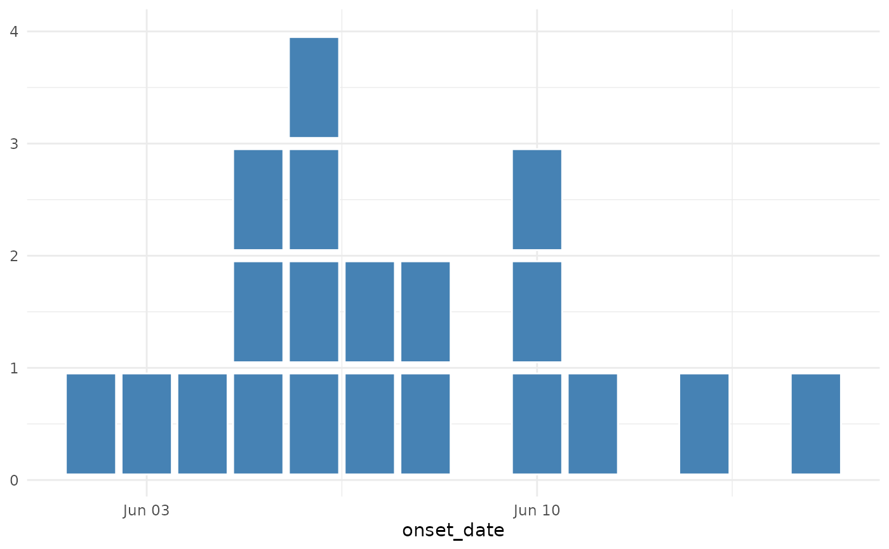
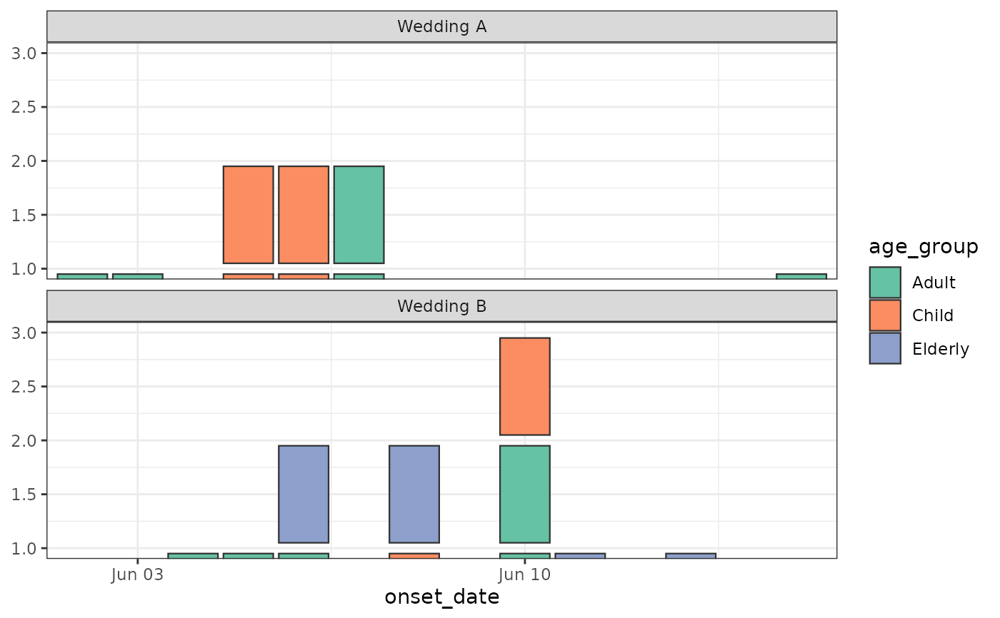

geom_epicurve() draws a classical epidemiological curve in which every
individual case is rendered as a small square stacked on top of others
sharing the same date (or other binning unit on the x-axis). The
companion stat, stat_epicurve(), assigns each case a vertical
stacking position within its x-value bin.
Usage
geom_epicurve(
mapping = NULL,
data = NULL,
stat = "epicurve",
position = "identity",
...,
width = 0.9,
height = 0.9,
na.rm = FALSE,
show.legend = NA,
inherit.aes = TRUE
)
stat_epicurve(
mapping = NULL,
data = NULL,
geom = "epicurve",
position = "identity",
...,
width = 0.9,
na.rm = FALSE,
show.legend = NA,
inherit.aes = TRUE
)Arguments
- mapping
Set of aesthetic mappings created by
ggplot2::aes().- data
The data to be displayed in this layer.
- stat
The statistical transformation to use on the data; defaults to
"epicurve".- position
Position adjustment, defaults to
"identity".- ...
Other arguments passed on to
ggplot2::layer().- width
Numeric width of each case square in x-axis units. For daily date data this is in days; defaults to
0.9.- height
Numeric height of each case square in y-axis units; defaults to
0.9. Values below 1 produce visible gaps between stacked cases.- na.rm
If
FALSE(the default), missing values are removed with a warning.- show.legend
Logical. Should this layer be included in the legends?
- inherit.aes
If
FALSE, overrides the default aesthetics rather than combining with them.- geom
The geometric object to use; defaults to
"epicurve".
Value
A ggplot2 layer that can be added to a ggplot2::ggplot() object.
Details
Because the geom delegates drawing to ggplot2::GeomRect, all of the
usual rectangle aesthetics are supported (fill, colour, alpha,
linewidth, linetype) and integrate naturally with any ggplot2
scale, theme, facet, or coordinate system.
Aesthetics
geom_epicurve() understands the following aesthetics (required in
bold):
x— typically aDaterepresenting the date of onset.y— supplied automatically bystat_epicurve().fill,colour,alpha,linewidth,linetype,group.
Interactive Visualisation
This custom geom is not compatible with plotly::ggplotly() conversion.
For interactive epidemic curves with tooltips, see the
"Interactive Epidemic Curves with Plotly" vignette:
vignette("interactive-epicurves", package = "paulmisc").
See also
simulate_outbreak() for generating example data.
Examples
library(ggplot2)
cases <- simulate_outbreak()
# Minimal epicurve
ggplot(cases, aes(x = onset_date)) +
geom_epicurve() +
theme_minimal()

# Coloured by age group, faceted by setting
ggplot(cases, aes(x = onset_date, fill = age_group)) +
geom_epicurve(colour = "grey20") +
facet_wrap(~ setting, ncol = 1) +
scale_fill_brewer(palette = "Set2") +
theme_bw()
